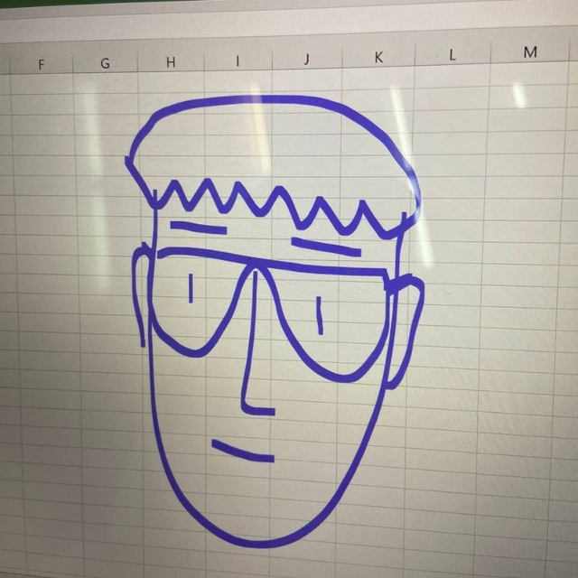

v1.0 release candidateNext.js · SQLite · Docker
Личный кабинет
Приватная админка с файловым хранилищем, заметками и журналом идей.
ПодробнееУчусь на втором курсе (с 2024 года) и собираю свой личный инструментарий: публичную визитку и приватный кабинет для проектов, заметок и учебных идей. Всё это написано на Next.js + Tailwind, хранится на SQLite и разворачивается на Ubuntu‑сервере.
Приватная админка с файловым хранилищем, заметками и журналом идей.
ПодробнееПубличная визитка с лёгкой темой, быстрой навигацией и контактами.
ПодробнееЭксперименты с иллюстрациями и мини‑анимациями для будущих разделов.
ПодробнееЯ учусь во втором семестре Московского политеха (поступил в 2024 году) и параллельно собираю свою экосистему инструментов. Этот сайт — единая точка входа: публичная визитка и приватный кабинет для заметок, файлов и сохранения идей.

Мои username в различных сервисах.